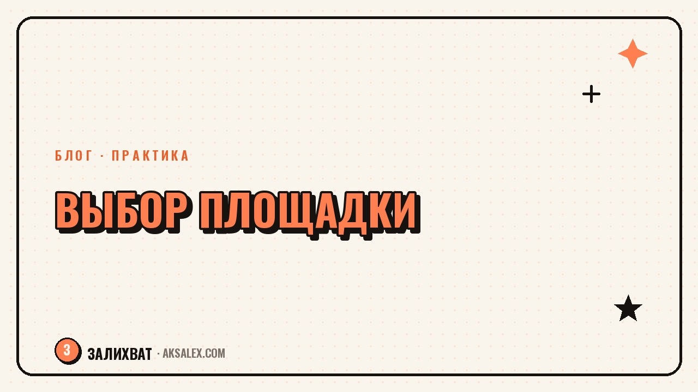

Как выбрать площадку для блога: сравнение соцсетей

Вопрос «где вести блог» звучит проще, чем есть на самом деле: площадок много, у каждой свой алгоритм, своя аудитория и свой любимый формат контента. Выбор наугад часто заканчивается тем, что человек месяц пишет в пустоту, а потом бросает - не потому что контент плохой, а потому что площадка не подходила под его формат и цель. Разберём, по каким критериям сравнивать соцсети и какую выбрать именно под твою ситуацию.
Почему площадку нельзя выбирать по принципу «там все сидят»
У каждой соцсети свой тип внимания аудитории. В одной листают короткие видео на автомате и редко читают текст, в другой специально заходят почитать длинный разбор по интересной теме. Если твой формат - развёрнутые тексты, а площадка заточена под пятнадцатисекундные ролики, аудитория не будет тебя смотреть, даже если контент хороший.
Второй момент - скорость роста и алгоритмы. Где-то новый блог получает охваты уже на старте за счёт рекомендаций, а где-то растёт медленно и в основном за счёт собственной базы подписчиков. Это важно учитывать, если результат нужен к конкретному сроку.
Площадка должна подходить под твой формат и темп, а не под чужой успешный пример из ленты.
Критерии, по которым стоит сравнивать
Прежде чем смотреть таблицу сравнения, определи три вещи: какой формат тебе естественнее - текст, фото, видео; сколько времени в неделю готов тратить на контент; какая цель - личный блог, продвижение дела или монетизация.
На что смотреть при выборе
- Формат, который там в принципе работает - текст, короткое видео, длинное видео, фото-карточки.
- Возраст и интересы типичной аудитории площадки - совпадает ли она с твоей целевой.
- Нужен ли готовый трафик от алгоритма или придётся приводить людей самому.
- Как площадка относится к рекламе и монетизации - где-то это встроено, где-то нужно искать сторонние способы.
- Насколько стабильно работает площадка в России прямо сейчас - доступность и ограничения меняются.
Сравнение популярных площадок
Ниже - сравнение площадок, которые чаще всего рассматривают для блога на русскоязычную аудиторию. Это ориентир, а не универсальный рейтинг - лучшая площадка та, что подходит именно твоему формату.
| Площадка | Сильная сторона | Для какого формата подходит |
|---|---|---|
| ВКонтакте | Широкая аудитория всех возрастов, встроенная реклама | Тексты, фото, короткие и длинные видео |
| Telegram-канал | Близкий контакт с аудиторией, нет жёсткого алгоритма | Текст, личные истории, голосовые сообщения |
| Дзен | Органический трафик через рекомендации на долгий срок | Длинные статьи, подробные разборы |
| YouTube | Самая долгая жизнь контента, монетизация через рекламу | Длинные видео и шортсы |
| Threads | Быстрый рост через текстовые реплики и обсуждения | Короткие текстовые посты, диалог с аудиторией |
Для старта без бюджета на продвижение проще заходить туда, где есть встроенный механизм показа контента новым людям - иначе первые месяцы придётся писать практически без обратной связи.
Нужно ли вести блог сразу на нескольких площадках
Частая ошибка новичков - распыляться сразу на четыре площадки, чтобы «не упустить аудиторию». На практике это означает четыре раза переупаковывать один и тот же контент под разные форматы, и сил хватает на несколько недель, после чего блог забрасывают везде одновременно.
Как действовать правильнее
- Выбери одну основную площадку и веди её регулярно минимум два-три месяца, прежде чем расширяться.
- Когда на основной площадке появится стабильный ритм публикаций, добавь вторую - как дублирующий канал, а не равноценный по усилиям.
- Используй нейросети для переупаковки готового контента под формат второй площадки, чтобы не писать всё с нуля.
- Следи, откуда реально приходят подписчики и заявки, и не держись за площадку, которая не даёт результата спустя разумный срок.
Одна площадка, которую ведёшь стабильно, почти всегда даёт больше результата, чем четыре, обновляемые раз в месяц.
Что делать, если площадка перестала работать или сменились правила
Соцсети меняют алгоритмы, вводят ограничения или становятся недоступны - это реальность последних лет, и строить всё дело только на одной площадке рискованно. Разумная стратегия - держать основной канал там, где растёшь сейчас, но постепенно собирать базу подписчиков в формате, который не зависит от конкретной платформы: почтовая рассылка, Telegram-канал как запасной контакт, собственный сайт.
Это не требует вести второй блог с той же интенсивностью - достаточно один раз настроить сбор контактов и периодически напоминать аудитории, где ещё тебя можно найти, если основная площадка вдруг станет недоступна.
Частые вопросы
Какую соцсеть выбрать для блога новичку без опыта?
Отталкивайся от формата, который тебе естественнее - если легче писать, подойдёт Telegram или Дзен, если легче снимать видео, стоит присмотреться к ВКонтакте или YouTube. Удобный формат важнее модной площадки.
Можно ли вести блог сразу на двух площадках с самого начала?
Лучше сначала набрать ритм на одной площадке минимум два-три месяца, а потом добавлять вторую как дублирующий канал. Распыление с первого дня чаще приводит к тому, что блог забрасывают везде одновременно.
Где проще получить первые просмотры без рекламного бюджета?
Площадки со встроенными рекомендациями, такие как Дзен или ВКонтакте, обычно показывают новый контент части аудитории без вложений. В Telegram и Threads рост сильнее зависит от того, как активно ты сам приводишь людей на канал.
Стоит ли переходить на новую площадку, если старая теряет аудиторию?
Да, но не резко и не полностью - начни пробовать новую площадку параллельно, сохраняя основной канал, и постепенно смещай усилия туда, где виден реальный рост. Резкий переход без проверки часто оставляет без аудитории сразу на обеих площадках.
Нужен ли отдельный сайт, если уже есть блог в соцсети?
Сайт не обязателен на старте, но полезен как запасная точка контакта с аудиторией, которая не зависит от правил конкретной соцсети. Для многих блогеров достаточно начать со сбора email или подписчиков в Telegram как подушки безопасности.
Раз тема оказалась полезной, вот что почитать следующим. Как перестать бояться реакции близких на смену профессии и начать действовать без их одобрения.
Читать статью →а не вручную